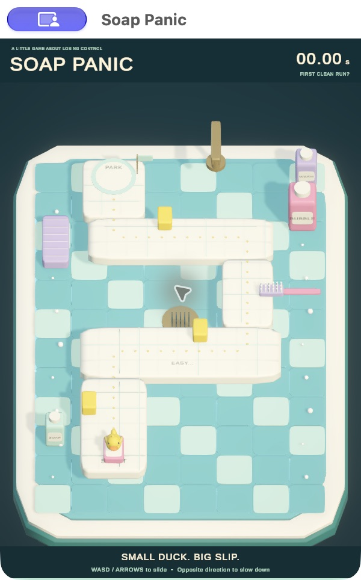
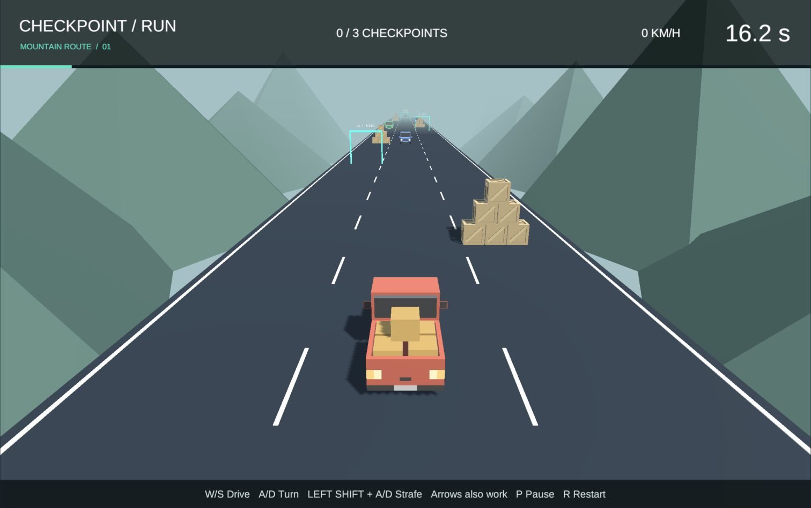
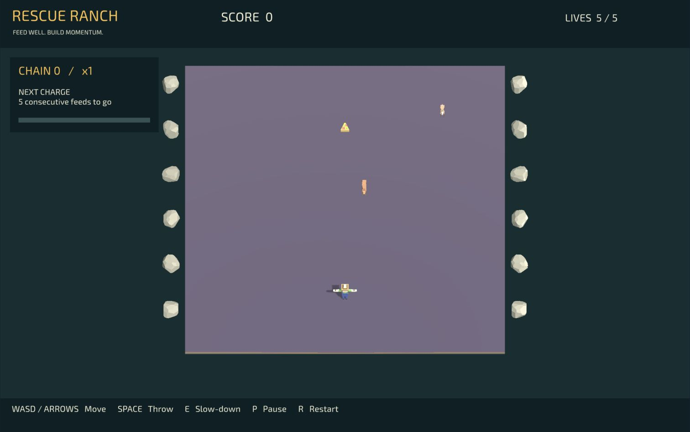

Harsh Kumar / Unity experiments
Small games.
Something to figure out.
A collection of playful experiments in timing, movement, feedback, and the occasional pancake disaster.
Free to play · Desktop + keyboard · No download or sign-inChoose your challenge
Press play. Find the feeling.
Each game explores a different interaction.
Open a game for controls and project credits.
 01
01Timing / Interaction
Last Delivery
One parcel. Two hands. A gate that won’t wait.
Play in your browser ↗
02Momentum / Control
Soap Panic
Getting there is easy. Stopping is the challenge.
Play in your browser ↗ 03
03Balance / Risk & reward
Stack & Splat
More pancakes. More questionable decisions.
Play in your browser ↗
04Driving / Recovery
Checkpoint Run
Three checkpoints. Keep the engine running.
Play in your browser ↗
05Aim / Rescue chains
Rescue Ranch
Feed the animals. Keep the rescue chain alive.
Play in your browser ↗Built to learn. These prototypes were developed with AI assistance. Project pages describe the controls, context, and credits. Gameplay is best experienced on a desktop browser; mobile touch play is not supported.